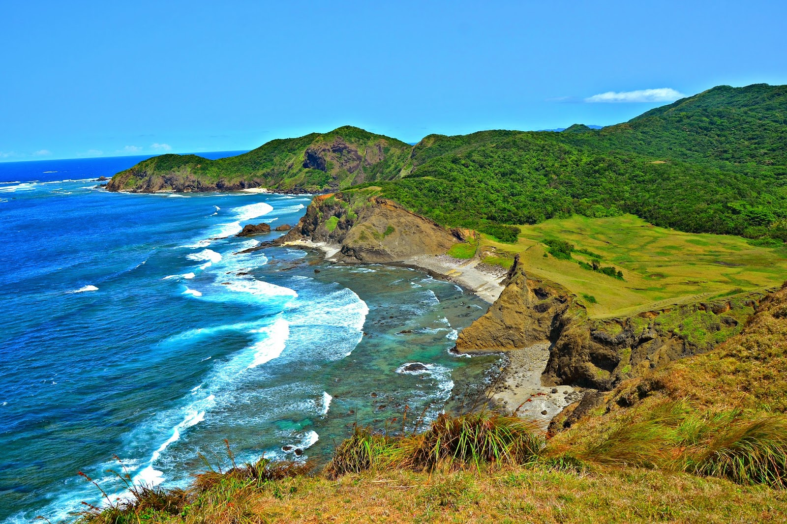

Cagayan
Cagayan is a province located in the northeastern region of the Philippines. It is located on the northeastern coast of the island of Luzon and is bordered by the Isabela Province to the south, the Cordillera Administrative Region to the west, and the Babuyan Channel and the Pacific Ocean to the east. The province is known for its natural beauty, with many beaches, caves, and waterfalls, as well as its rich cultural heritage, with many Spanish-colonial era churches and other historical sites.
The capital of Cagayan is Tuguegarao City. The province is also known for its agricultural industry, particularly for rice, corn, and tobacco production.
If you don't invest very much, then defeat doesn't hurt very much and winning is not very exciting. - Author: Dick Vermeil
Flights Between Manila and Cagayan:
| From Manila to Cagayan | From Cagayan to Manila |
|---|---|
| PR2519 4:05AM | PR2520 6:20AM |
| PR2521 7:50AM | PR2522 10:15AM |
| PR2525 1:00PM | PR2526 3:25PM |
| PR2529 4:45PM | PR2530 7:10PM |

Palaui Island
Palaui Island is a remote island located in the northernmost part of the province of Cagayan in the Philippines. It is known for its natural beauty, with rugged cliffs, lush vegetation, and white-sand beaches. The island is also home to several historic sites, including the Cape Engaño Lighthouse, which dates back to the Spanish colonial era. Palaui Island is a protected area and ecotourism destination, and it is considered as one of the best hiking and camping sites in the Philippines.
The island is a popular spot for birdwatching, and it is home to several rare and endangered species of birds. The island is also a popular spot for scuba diving, snorkeling, and fishing. It was also named as one of the locations of the Survivor: Cagayan, a reality TV show.